coast-original-island
Original 3x3 island registration. Thin bank and foam stay between grass and water; compare against extended island.
Asset-only delivery. No game integration. Sources are preserved generated masters; terrain cells share whole-atlas normalization, while isolated bridge/mountain objects use declared per-cell cutout fits. Ports are declared terrain semantics. These candidates require visual review and are not certified seamless or WFC-ready.
Manifest and source hashes · Boundary measurements
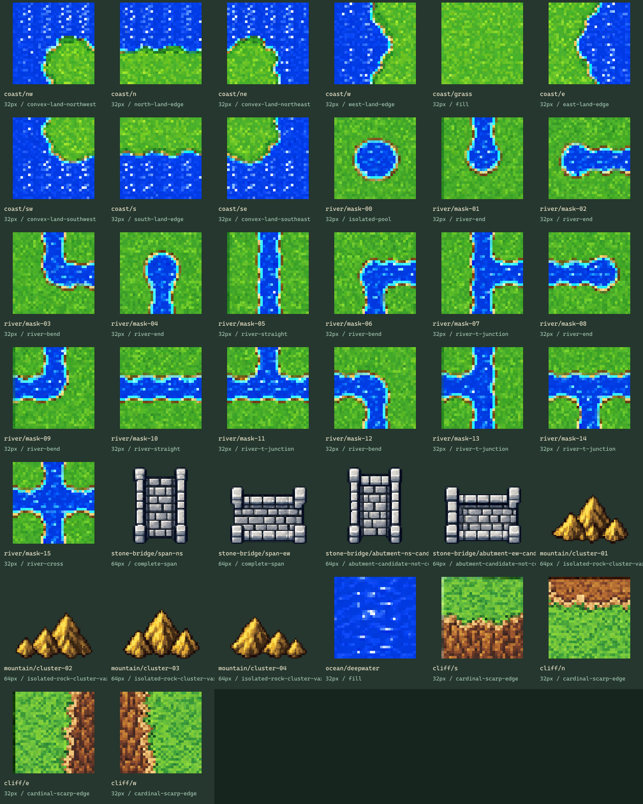
Original 3x3 island registration. Thin bank and foam stay between grass and water; compare against extended island.
Repeated edges and center expose phase, boundary and terrain-width discontinuities; not certified seamless.
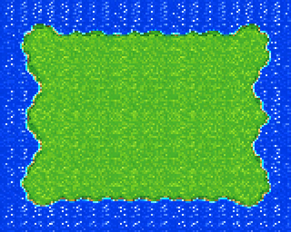
Closed loop from actual bends and straight native tiles; inspect channel width and bank alignment at every join.

Cross with four endcaps. Grass comes from the separate coast atlas, so palette mismatch is intentionally visible.
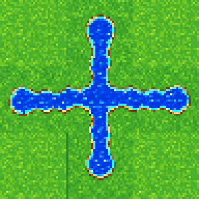
Repeated vertical straights show bank-width, line and phase continuity; two adjacent channels are an inspection fixture.
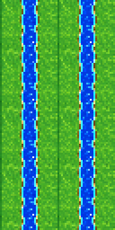
Repeated horizontal straight channel reveals exact native joins.
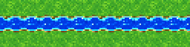
Unobstructed source water crop repeated in both axes. Inspect wave phase and border repetition; no seamlessness certification.
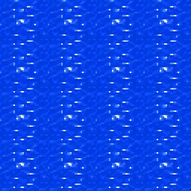
Native isolated stone bridge candidates on a contrasting review background. Abutments still resemble complete short spans, not verified attachable ends.
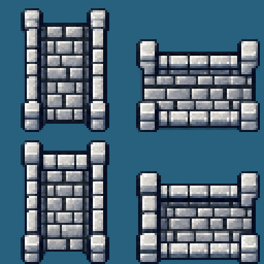
Four isolated gold-rock cluster variants. Shape, baseline and alpha review; this is not a certified edge-joining ridge set.
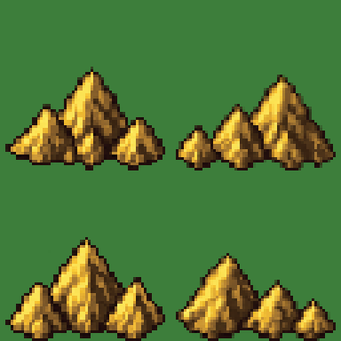
Original four cardinal scarp roles: south/north/east/west; inspect raised-grass side and natural earth face.
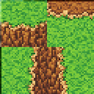
South-facing ledge repeated horizontally: plateau is NORTH. Inspect edge phase, grass/earth balance and rock lip.
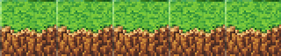
North-facing ledge repeated horizontally: plateau is SOUTH. Adjacent runs are candidates, not certified seamless.
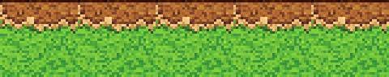
East-facing scarp repeated vertically: plateau is WEST.
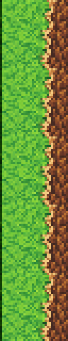
West-facing scarp repeated vertically: plateau is EAST.
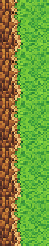
Native isolated objects composited over a checker before 3× nearest-neighbor display. Check the actual alpha outline, baseline and source-fit record; no background paint was added to production PNGs.
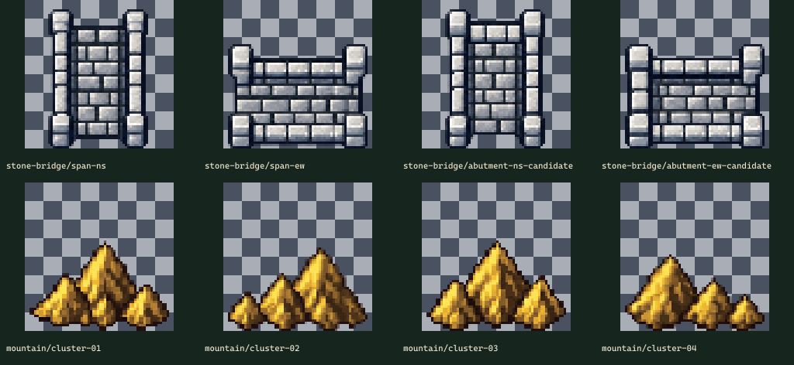
Original 1254×1254 → group crop 0,0 1254×1254 → 96×96 native atlas. Normalization: whole-atlas-resize-before-slice. Per-object source crops and placements are recorded in the manifest.
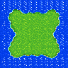
Original 1281×1228 → group crop 0,0 1281×1228 → 128×128 native atlas. Normalization: whole-atlas-resize-before-slice. Per-object source crops and placements are recorded in the manifest.
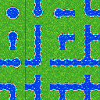
Original 1536×1024 → group crop 0,0 1536×1024 → 128×128 native atlas. Normalization: per-cell-alpha-cutout-fit. Per-object source crops and placements are recorded in the manifest.
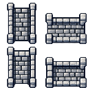
Original 1536×1024 → group crop 0,0 1536×1024 → 128×128 native atlas. Normalization: per-cell-alpha-cutout-fit. Per-object source crops and placements are recorded in the manifest.
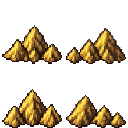
Original 1254×1254 → group crop 0,0 128×128 → 32×32 native atlas. Normalization: whole-atlas-resize-before-slice. Per-object source crops and placements are recorded in the manifest.

Original 1254×1254 → group crop 0,0 1254×1254 → 64×64 native atlas. Normalization: whole-atlas-resize-before-slice. Per-object source crops and placements are recorded in the manifest.